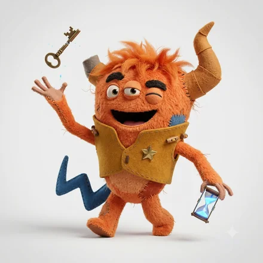
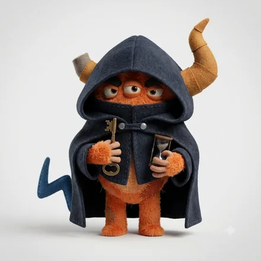
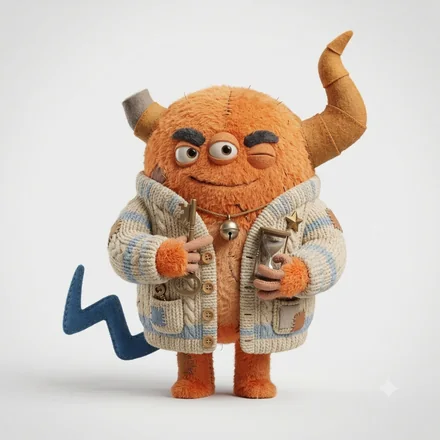
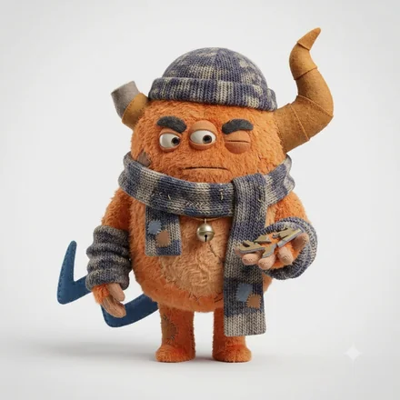

monster type
ENTP-A-H
前提をひっくり返して、可能性を試す人
「そもそも、こうしたらどうか」と切り込むのが得意です。着想が次々に湧き、議論のなかで思考が加速します。飽きが早く、始めることと続けることの落差が課題になりやすいタイプです。
思いついたことをその場で口にし、人を巻き込みながら形にしていくタイプ。自分の見立てを疑わないので動き出しが速く、初対面の相手にも遠慮なく話を持ちかけます。止まっていた空気を一度で変えてしまう強さがある反面、巻き込んだ人が同じ速さでついてこられているかの確認は、後回しになりがちです。

ENTP-A-C斬り込む突破モンスター
ENTP-O-H迷いを楽しむ突破モンスター
ENTP-O-C静かに企てる突破モンスター同じ基本タイプでも、自分への確信（A / O）と人への構え（H / C）で現れ方が変わります。
ここは基本タイプ（ENTP）に共通する性質です。
強み
気をつけたいところ
ENTP-A-H ならでは
このタイプの強み
「誰に持っていけば動くか」の判断が速く、そこにためらいがない。人の力を借りることに抵抗がないぶん、ひとりでは届かない規模まで話を運べます。
落とし穴
任せた相手を信じきってしまい、あとで見たら誰も動いていなかった、が起きやすい。渡した翌日に一度だけ様子を見にいくだけで、かなり防げます。
力を発揮する環境
新しいことを試せて、変化が歓迎される環境
向いている役割
新規事業、企画、突破口づくり、対外交渉
立ち上げと突破に無類の強さ。運用を担う相棒がいると事業になる。
かみ合う相手
見ている世界が補い合う組み合わせ。人への構えが同じなので距離の取り方で揉めにくく、自分への確信が違うぶん、迷いのなさと慎重さを互いに預けられます。
安心できる相手
テンポも間合いも近く、説明のいらない関係になりやすい相手。長く一緒にいても疲れにくい組み合わせです。
刺激をくれる相手
価値観の置き所が違うため摩擦は起きますが、自分に足りない視点を最も速く手渡してくれる相手です。
相手のコードがわかれば、2人の相性をこの場で見られます。
この人との相性を調べるこの診断は、回答時点での自己認識を6つの軸で整理したものです。人の性格は状況や時期によって変わります。
© 2026 WONDER BROTHERS INC. All rights reserved.